User's Manual
Tribes2 Infinite Spawn is a GUI-driven utility program that allows the user to monitor either a local or public game server. If the game server is local then Tribes2 Infinite Spawn can restart the server to maintain it online and ready for play given the limitations of the monitoring system similar to the Dynamix ispawn.exe.
Tribes2 Infinite Spawn can monitor the following types of game servers:
1: Starsiege:
Tribes
2:
Tribes 2
3:
Quake
4:
Hexen II
5:
QuakeWorld
6:
HexenWorld
7:
Quake II
8:
Unreal
9:
Half-Life
10: Sin
11: Shogo: Mobile
Armor Division
12: Quake III
13: BFRIS
14: Kingpin
15: Heretic II
16: Soldier of
Fortune
Step #1: Installation
Install Tribes2 Infinite Spawn in a folder named c:\ispawn\ or something similar. Just be sure the folder name you use does NOT contain any special characters or spaces otherwise you may encounter errant program behaviors.
Step #2: Running Tribes2 Infinite Spawn Vers 2.0.2 the first time
The first time you run Tribes2 Infinite Spawn it will attempt to make some Shortcut files you can use later on to run Tribes2 Infinite Spawn.
Keep in mind there is a Command Line interface for Tribes2 Infinite Spawn Vers - more about this later. Typically the Command Line interface allows the user to replace each of the GUI prompts with a Command Line replacement in a one-for-one fashion.
| 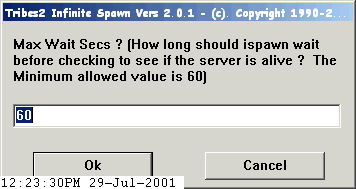Max wait seconds - this specifies how long Tribes2 Infinite Spawn should wait between polling the specified server to determine if it is online. Typically 60 secs is a reasonable time to wait. The caution here is if you poll too frequently you may catch the server during a legitimate time while the server is offline such as during a mission load or while the server is being reset however the server is not in fact offline and does not in fact need to be reset. Click OK to accept the value that appears in the edit field or click CANCEL to quit the program. The problem with the Dynamix version of ispawn.exe is that there is NO way to modify the amount of time Dynamix's ispawn.exe waits before it polls the server so if the CPU you are using to run Dynamix's ispawn.exe is just slow enough Dynamix's ispawn.exe will erroneously determine your Tribes2 Server is offline and Dynamix's ispawn.exe will restart the server even when the server is not in fact offline and in need of being restarted. |
| 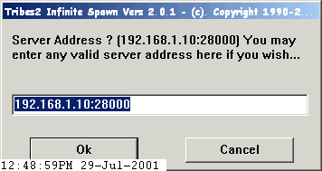Server Address - this specifies the IP address and Port Number Tribes2 Infinite Spawn should use when polling the server to determine if it is online. The IP Address and Port Number will be tested to determine if it is a local IP Address (a local IP Address is one that is installed in the computer you are using to run Tribes2 Infinite Spawn). If the IP Address is NOT a local IP Address then no attempts will be made to Restart the server whenever the server is determined to be offline. Click OK to accept the value that appears in the edit field or click CANCEL to quit the program. The problem with the Dynamix version of ispawn.exe is that there is NO way to specify the IP Address Dynamix's ispawn.exe uses to poll the server so Dynamix's ispawn.exe will blindly use whichever IP Address it determines can be used to poll the server and so Dynamix's ispawn.exe CANNOT be used to poll any servers other than those that are local to the computer on which Dynamix's ispawn.exe is run. |
| 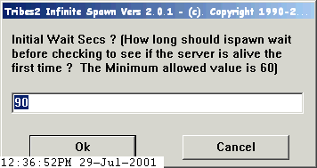Initial wait seconds - this specifies how long Tribes2 Infinite Spawn should wait before polling the specified server the first time to determine if it is online. Typically 90 secs is a reasonable time to wait. The caution here is if you poll too soon after the server is initially started you may catch the server during the legitimate time while the server is offline such as before the server is actually online. Click OK to accept the value that appears in the edit field or click CANCEL to quit the program. The problem with the Dynamix version of ispawn.exe is that there is NO way to modify the amount of time Dynamix's ispawn.exe waits before it polls the server the first time after the server is initialy started and if the CPU you are using to run Dynamix's ispawn.exe is just slow enough and your Tribes2 Server is taking just long enough Dynamix's ispawn.exe will erroneously determine your Tribes2 Server is offline even before it has come online the first time and Dynamix's ispawn.exe will sit there and restart the server over and over until someone intervenes to stop the madness. |
| 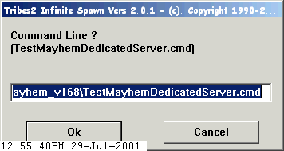Command
Line - this specifies the Command Batch file Tribes2 Infinite Spawn should
use when polling the server to determine if it is online. If your OS is Win95/98/Me
then you will want to use a .BAT file otherwise if your OS is Win2K/NT/XP then
you will want to use a .CMD file. Click OK to accept the value that appears
in the edit field or click CANCEL to quit the program. The problem with the
Dynamix version of ispawn.exe is that there is NO way to specify how you want
your server to be run using a Command Batch program. Command Batch program
files can provide a bit more flexability in running a program such as the Tribes2
Server. Below is what a typical Tribes2 Command Batch program file looks like: Tribes2.exe -dedicated -mod name-of-mod There is no need to specify the IP Address and Port number in the Command Batch program file, this differs from the normal manner you may be used to using the Dynamix ispawn.exe program. The Port Number your Tribes2 Server uses is typically specified in the prefs/serverPrefs.cs file. |
| 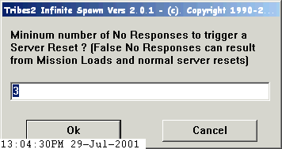Minimum Number of No Responses - this specifies the minimum number of No Responses Tribes2 Infinite Spawn should use when determining if your server is online. Typically you would want to allow a certain number of No Response conditions to allow your server to be offline for short periods of time such as whenever your server is loading a new mission or performing a normal server reset operation. Click OK to accept the value that appears in the edit field or click CANCEL to quit the program. The problem with the Dynamix version of ispawn.exe is that there is NO way to specify how many No Responses trigger a restart so Dynamix's ispawn.exe is a bit too hair-triggered about when it should restart the server and this can result in some false server restarts. |
| 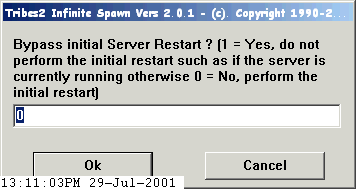Bypass the initial Server Restart - this allows the user to specify that the Tribes2 Infinite Spawn should bypass the typical Server Restart logic the first time cuz there is already a Server running and it should use that one instead of start a new one. Click OK to accept the value that appears in the edit field or click CANCEL to quit the program. The problem with the Dynamix version of ispawn.exe is that there is NO way to bypass the fact that Dynamix's ispawn.exe will startup the Tribes2 Server it is told to monitor however there may already be a server online and waiting for ispawn.exe to begin monitoring. |
| 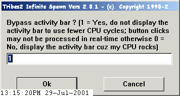Bypass the Activity Bar - this allows the user to specify that the Tribes2 Infinite Spawn should bypass the typical GUI Activity Bar. Got a super-fast computer and like to see some graphical activity then go ahead and use it otherwise bypass this stuff to achieve the same functionality using fewer CPU cycles. Click OK to accept the value that appears in the edit field or click CANCEL to quit the program. The problem with the Dynamix version of ispawn.exe is that there is NO way to see that Dynamix's ispawn.exe is doing anything other than just sitting there unless the numbers change some. |
| 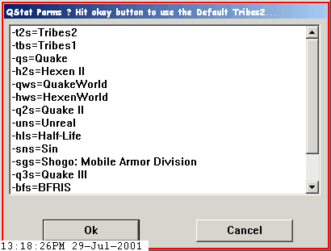QStat Parms - this allows the user to specify tye server type Tribes2 Infinite Spawn should use when polling the server to determine if the server is online. Wanna monitor a Quake II server or a Half-Life server then do it ! Click OK to accept the selected server type that appears in the listbox or click CANCEL to quit the program. The default is Tribes2. The problem with the Dynamix version of ispawn.exe is that there is NO way use Dynamix's ispawn.exe to monitor any type of server other than whichever type Dynamix's ispawn.exe knows how to monitor. |
| 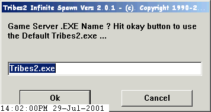Game Server .EXE Name - this is the program name that appears in the window title for the game server you are running. This is how Tribes2 Infinite Spawn knows your game server is running and it can proceed to poll the game server using QStat.exe to determine if the server is online. Click OK to accept the default game server .EXE name that appears in the editbox or click CANCEL to quit the program. |
|
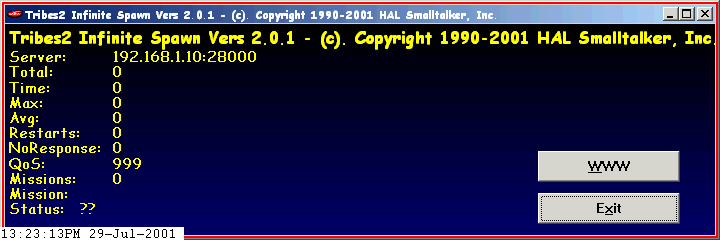 This is the COOL display you will see once Tribes2 Infinite Spawn starts-up initialy ! Click WWW to polp-up a web browser with your favorite website looking back at ya or click EXIT to quit the program. |
|
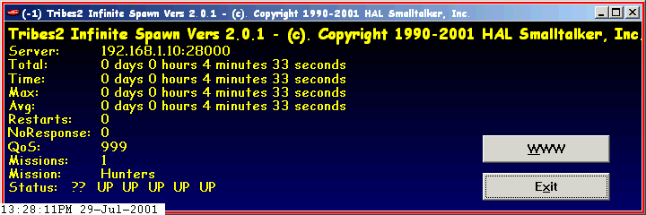 This is the display you will see after Tribes2 Infinite Spawn has been running for a while ! Notice the Server Address, Total. Time, Max, Avg, Restarts and NoResponses. These are pretty much the same as Dynamix's ispawn.exe's display. QoS is the Quality of Service indicator which tells you how many Missions per ReStarts & NoResponses so 999 is the default initial QoS Indicator. Missions shows you how many missions have been played by the server. Mission is the current Mission being played. Status shows you the history of the status your server has encountered: NR means NoResponse, NS means No Server which resulted in a ReStart, UP means the server is online and RS means the server has been ReStarted. You will notice the Minimum Number of NR's will appear before an RS appears cuz Tribes2 Infinite Spawn will wait for the Minimum Number of NoResponses before performing a Restart. Don't get confused by an RS that appears in the Status when you may not see a Restart being counted cuz the Restart count just counts the number of times the Tribes2.exe died and had to be Restarted. The Status display shows at most the last 32 status indicators which means if you used the default 60 sec poll interval the Status list will show at most the last 32 minutes worth of status assuming the server has not been restarted during this time. |
Command
Line Interface :
The first time you run Tribes2 Infinite Spawn it will prompt you for all the
required parameters as specified above in this document and then Tribes2 Infinite
Spawn will create a shortcut in the same folder into which you installed Tribes2
Infinite Spawn along with a file called params.txt. The params.txt file contains
each of the parameters you previously entered so you can more quickly run Tribes2
Infinite Spawn Vers the next time you want to start Tribes2 Infinite Spawn from
the command line. As you will see the ispawn.exe shortcut uses the command line
: C:\ispawn\ispawn.exe C:\ispawn\params.txt assuming you installed Tribes2 Infinite
Spawn into the folder called C:\ispawn\.
This site was updated on August-03-2001 16:20 PST
Press
/ News Config
Util Windows Stay
Mayhem
Mod Screenshots
Download
Notes
Items
Scripts
Mayhem Mod
by {USB}Spiderman + {USB}|Hypn0tik|,
Website by TerroX [4o4]
Copyright 2001
Mayhem Website http://tribes2.rocks.it/